De investigación. Propuesto por Juan Bosco Romero Márquez, profesor colaborador de la Universidad de Valladolid. Problema 292. 43.Mostrar que la condición necesaria y suficiente para que la altura AA', la mediana BB' y una de las bisectrices del ángulo C de un triángulo ABC sean concurrentes es que senA /cosB = +tangC. Thébault, V. (1949): Mathematics Magazine. Vol. 23, No. 2, Nov. - Dec., 1949, p. 103 Nota del editor: Este problema se publica, aunque ya se ha publicado el 262 de esta revista que es idéntico, por el motivo de que la igualdad de Thebault no fue la solución de Damián Aranda ni de José María Pedret ni de Maite Peña, resolutores del problema. Solución de José María Pedret, Ingeniero Naval. Esplugues de Llobregat (Barcelona). (16 de enero de 2006) |
|
INTRODUCCIÓN |
|
Nos limitamos a citar los teoremas que emplearemos y que por harto conocidos no demostraremos. Adoptamos también
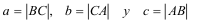
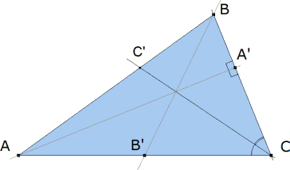 figura 1 Supongamos que tenemos el problema solucionado (figura 1). TEOREMA DE CEVA Si tres cevianas AA', BB', CC' son concurrentes se cumple:
TEOREMA DEL SENO En todo triángulo ABC se cumple
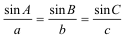 |
|
SOLUCIÓN |
|
1 APLICACIÓN DEL TEOREMA DE CEVA AL TRIÁNGULO ABC
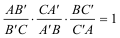 Pero observando la figura 1 vemos que
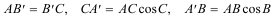
Sustituyendo en la igualdad de CEVA
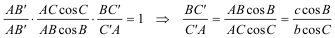
2 APLICACIÓN DEL TEOREMA DEL SENO A LOS TRIANGULO ACC' y CBC' Teniendo en cuenta que CC' es la bisectriz de C, aplicamos el teorema del seno
en el triángulo ACC'
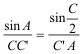
en el triángulo CBC'
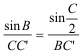 Dividiendo miembro a miembro las dos igualdades anteriores
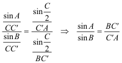
3 IGUALANDO LOS RESULTADOS DE 1 Y 2
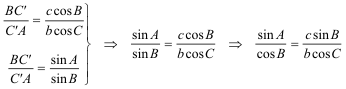
4 APLICANDO EL TEOREMA DE LOS SENOS AL TRIANGULO ABC
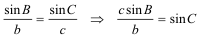
5 LA SOLUCIÓN (SUSTITUYENDO EL RESULTADO DE 4 EN 3)
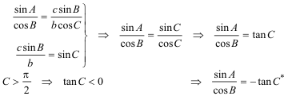 *Si C>π/2 entonces la concurrencia se produciría sobre la bisectriz exterior. En resumen
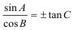 c.q.d.
|